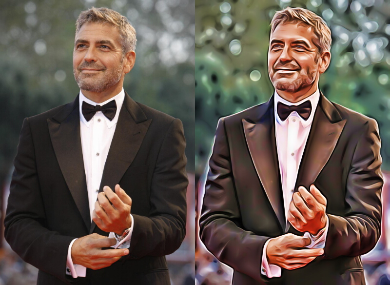
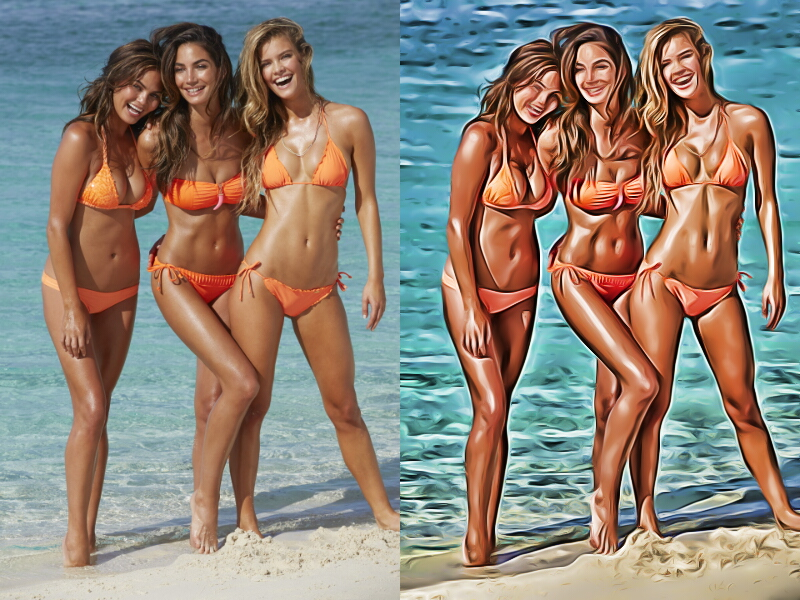

PhotoModularFX 0.3.2500 (18-Sep-2019)
Create Custom unlimited photo Effects by parallel processing Flow.
Create project flows, by nodal editing, connecting inputs and outputs.
Output images can be used to process other images. (The image itself become the effect)
The PORTABLE program features a large list of preset modules that you can add to the processing strings. They are basic and advanced effects, that you can easily customize.
Moreover, you can select one of the available templates or create your own processing string. (starting with the Input and Output modules or a template)
{kind=link}
Before and After examples of project A5-AUTOSCOPE-02.txt  
{kind=link}
{kind=link}
DOWNLOADS:
| ZIP 16 Mbytes |
ZIP Lite 15 Mbytes |
|
| Softpedia |

|
/ |
| Direck Link | ZIP | not available |
Take a look at the list of included Nodes/FX
Take a look at some Photo Effects that can be done combining modules toghether.
If you're curious, you have questions about any aspect of PhotoModularFX, you would like to make/suggest improvements or new features, don't hesitate to (partecipate) take a look at the project's design FORUM. Through which you can observe new features, new-flow projects, updates, various details and furthermore communicate with the author. (besides doing it privately via email reexre@gmail.com)
Update 0.3.2500 (18-Sep-2019)
[Modules]. Stippling2: Speed and aesthetic improvements.
- NEW: WhiteBal.: WhiteBalance using GrayWorld assumption.
[Other]
- Improved "Auto Arrange" algorithm.
- Added some CueBannerText(s)
- Fix watermark error on demo version.
HISTORY
Update 0.3.2255 (20-Aug-2019)
[Modules]
- New: Stippling2: Voronoi based stippling. Good but slow.
- New: xPainter2: Painter Effect V2.
- New: JigSaw Puzzle (thanks to Olaf Schmidt)
- New: Saturation: Saturation separately in R G B channels.
- New: Skin: Skin tone adjust (WIP)
- New: Straighten: Auto Straighten
- New: Droste: Experimental Droste Effect (WIP).
- New: SoftThrsh3: Soft Thresholding (3 Channels)
- Q-Bertify: Added "just hexagon" option (Hexagonal pixelate)
- Voronoi: Modified algorithm (similar to Stippling2)
[Other]
- Vertical Scrollbars sizes DPI aware.
- vbRichClient: Newest Version 5.0.69
Update 0.3.2000 (28-May-2019)
[Modules]
- New: MarchingS: Marching Squares abstraction.
- New: Median3: Median Filter on 3 channels
- New: Sphere: From flat to sphere effect (thanks to Olaf Schmidt)
- Median: Faster Algorithm.
- xChord: Extened text output filename
- LocalHEii: revisited
[Other]
- Restyle of a parameter setting widget.
Update 0.3.1805 (30-Mar-2019)
[Modules]
- New: Abs3: Absolute values (3 channels).
- BlurCirc;BlurCirc3 renamed to ShapeBlur(3) and extended with quite fast implementation of
other shapes like Triangle Square Pentagon Hexagon Line Star Moon Heart Eye.
- Suppress-Node renamed to SoftThrsh.
[Other]
- Downloading Project-Thumbs from https://raw.githubusercontent.com/miorsoft/Site/master/Projects/PhotoModularFX/HTML/Thumbs
+Optimization
Update 0.3.1780 (19-Mar-2019)
[Modules]
[Other]
- Fixed possible crash on program exit while downloading Project-Thumbs
Update 0.3.1777 (18-Mar-2019)
[Modules]
- NEW: Gain;Gain3: Inigo Quilez gain function
- NEW: LocalGain;LocalGain3: Local Inigo Quilez gain function
- NEW: BlurCirc;BlurCirc3: Circle Blur
- NEW: Clamp3: Clamp values between a range (3 channels)
- NEW: vSplit: Video split before-after (WIP)
- FLOW: Revisited.
- BLUR;BLUR3: Implementation of 'moving-average' Algorithm (Thanks TheTrick & Mikle)
- FastEPS;FastEPS3: New Parameter: Range Difference Mode (Linear;Squared)
- FastEPS;FastEPS3: Small speed gain.
- Normalize3: Option new mean as source (New mean = -1) now is per channel instead of global.
- Mix2x3: Added clamp outputs 0-1 Option.
- Mean: Added Alpha Trimmed Mean.
[Other]
- Save about 50MBytes ZIP file by downloading project-thumbs preview on Project-mouse-over.
- Speed gain thanks to Jacob Roman's "Faux"DoEvents. (by using GetQueueStatus)
- Use of Pade Approximant for Cos and Sin functions.
- On first run ask for desktop-shortcut creation.
- Changes on Widget FileList
- vbRC5BaseDlls folder merged to BIN folder.
Update 0.3.1600 (20-Dec-2018)
[Modules]
- NEW: FastEPS: Fast edge preserve smoothing filter.
- NEW: FastEPS3: 3 channles Fast edge preserve smoothing filter.
- NEW: Stippling: Poission Disc Distribution Stippling effect.
- NEW: Fractalize: Experimental Picture to fractal effect
- NEW: Stipple2: New video Stipple algorithm.
- NEW: Mix2W: Mix 2 channels by 2 weights (same way as Mix3w)
- NEW: Clamp: Clamp Values between a custom Range.
- NEW: ABS: Absoulte Value.
- NEW: FLOW2: New Edge tangent Flow algorithm.
- NEW: Q-Bertify: Q-Bert blocks
- NEW: DCT and IDCT: Pure Discrete cosine transform (and inverse).
- NEW: Corner: SUSAN Corners Detection.
- NEW: RGB>LCH;LCH>RGB: Added Cie Lch colorspace conversion.
- RGB>HSL;HSL>RGB: Added HCL colorspace conversion.(experimental)
- ToneMap; ToneMap3: Added NoHalo(FastEPS) Option.
- Bilateral: New FAST algorithm option.
- BilaOAEX: 'Per level-Bilateral' option with fast algorithm.
- DogByF: (Flow Based Difference of Gaussian) Faster algorithm.
- Stipple: Faster algorithm.
- xChord: Improvements.
- Mosaic: New Algorithm (still incomplete)
- Sauvola: Bug Fix.
[Other]
- Added toggle Projects-Sorting-Mode by Clicking 'Load Project'-Label.
- Faster Tanh and Exp function. (approximated)
- Removed Displayed TXT file extension from Project List Names.
- Removed toggle Fullscreen.
Update 0.3.1264 (28-Sep-2018)
[Modules]
- NEW: Lens: Camera lens distorsion
- NEW: Magnifiers: Magnifier Glass (Hotspot)
- xChord: Improved algorithm.
- Bilateral: Polynomial: Experimental superfast algorithm.
- Normalize; Normalize3: Added New Variance proportionality option.
- DoG: Added "Ratio" parameter.
- xChord: Improved algorithm.
[Other]
- Filter Project checkbox caption and tooltip update after closing the module-selection-window.
Update 0.3.1153 (01-ago-2018)
[Modules]
-Blur; Blur3; Fast Mode
-ToneMap; ToneMap3; LocalMap; DoG; Noise2; PlasticWrap; -Faster (because of Internal faster Blur)
-PlastWrap: Changed 'Details' parameter (Now proportional to image size)
-RGB2HCY and HCY2RGB: reviewed colorspaces conversion algorithm
-EDGES: Reviewed algorithm
[Other]
-Added 'Add FX-Node Selector' Window
-Added Projects-Thumbs Preview. +50 MBytes
-Renaming 'Node' to 'Module'
Update 0.3.1114 (03-jul-2018)
[Nodes]
[Other]
-Mousewheel support on Picker Valueinput and Slider
-Mousewheel fix on "Add Node/FX"
-Second Click's issue solved on "Add Node/FX"
-Load Project on FileList Keyboard up/down Arrows (ScrollIndexChange)
Update 0.3.1102 (25-jun-2018)
[Nodes]
-NEW: SmoothMM: Smooth Min/Max
[Other]
-Bug fix on check for updates
Update 0.3.1100 (24-jun-2018)
[Nodes]
-NEW: ColorContrast: Make Lighter choosen hue and darker complementary hue (inspired by Luminar)
[Other]
-Auto Adapt screen zoom to current screen DPI
-Animated connections on node click
-Icon minor change
Update 0.3.1073 (06-jun-2018)
[Nodes]
-New: Mix3W: Mix 3 channels by 3 weights
-New: Technicolor: 2-Strip & 3-Strip Techincolor effect.
-MIX2: New option to clamp output between 0-1
-Pow; Pow3: Option to manage negative input this way: out = Sgn(in)*Abs(in)^Pow
-SNN; SNN3: Algorithm review.
[Other]
-vbRichClient: Newest Version 5.0.66
-Bug Fix: Crash on DropDownList Click
Update 0.3.1040 (20-Apr-2018)
[Nodes]
-New: FormulaRGB: 3 Output Formulas having 3 inputs.
-New: NNart: Experimental Neural Network Reconstruction.
-New: QuantGNG3: Experimental Growing Neural Gas Quantizer.
-Formula; Formula2; Formula3: A lot faster performance and new inputbox.
-RGBscreen: Revisited to look more like a CRT Screen.
[Other]
-Bug fix on Save Project with "Project Filter" Activated
Update 0.3.910 (26-Mar-2018)
[Nodes]
-New: Mean : Arithmetic Harmonic Contraharmonic and Geometric mean
-New: Mean3: Arithmetic Harmonic Contraharmonic and Geometric mean (3 channel)
-New: Invert3: Invert 3 channels out=(1-In)
-New: vMotion: Video Motion Blur
-Mix3: Added Gray HSP and PS-like
-ADD & ADD3 added clamp 0-1 option
-Ramp: Small bug fix
-POW: Small bug fix
[Other]
-Auto check for Updates.
-Save "Resize mode" on Settings.ini
-Custom message box
-Node Setting's Auto Apply (Removed "Apply" button)
-Dark gray GUI
Update 0.3.834 (01-Mar-2018)
[Nodes]
[Other]
-Removed update (download latest version)
-New "Flat" faster GUI
Update 0.3.783 (21-Feb-2018)
[Nodes]
-NEW: CAIR: Content Aware Image Resize.
-NEW: Plastic: Plastic Wrap Effect.
-NEW: Crop: Crop Top-Bottom Left-Right
-NEW: xPainter: experimental 'Painter effect'
-NEW: xBiro: experimental 'curve effect'
-NEW: xChord: experimental 'chord effect'
-NEW: Sauvola: Sauvola thresholding
-Render3: Allow different sizes between input triplets.
-RGBtweak Renamed to ADD3
-xPOIS: Added 'Source' background
[Other]
-Download latest version if available (click "u" button)
-Import project from Picture: Small bug fix (getProjectAsString)
-Custom Checkbox and DropDown: Right click for Default Value
-Project Description: Allowed all chars but ","
Update 0.3.580 (18-Dec-2017)
[Nodes]
-NEW: Stretch;Stretch3: Histogram Stretch.
-NEW: ToneMap,ToneMap3: Tone Mapping for 1 and 3 channels.
-Blur;Blur3: Added BOX blur Algo.
-StdDEV;stdDEV3 (Standard Deviation): Really a lot Faster
-LocalHEii: Little faster
-VRCLAHE: Algo retouch
-BilaOAEX: Pyramids without cairo
-Normalize;Normalize3: Now output range can be not clamped 0-1
-MtBlur;MtBlur3: small bug fix
-Ramp: Bug fix on RepatMode:Standard (Left-Right;Up-Down)
-RGB>HSL;HSL>RGB: Added HSV colorspace conversion.
[Other]
-Sound: Added checkbox to turn "ready output" sound on/off.
-GUI: Little restyles, lighter nodes and draw speedup.
Update 0.3.462 (15-Sep-2017)
[Nodes]
-New: CubicBezier: Cubic Bezier through 2 given points transform.
-New: LocalHE3: Local Histogram Equalization (CLAHE) on 3 channels at one time.
-ThrBlur; ThrBlur3: Optimization (Do not recreate Poisson Disks)
-VRLCN: New variance computation algo.
[Other]
-FLOW: Improved Smooth Algo
-CannyEdge: Little improvement
-Kmean123D: New algorithm for initial centroids selection: (Kmean++)
-Updated vbRichClient's vbRC5BaseDlls
-PoissonDisk: Applyed Box Muller Transform Distribution
-PopUp Messages: Little Fix
-Fonts: some tweaks
-Nodes tooltip: better (removed newlines)
-Zoom: Smoother
Update 0.3.400 (05-Apr-2017)
[Nodes]
-INPUT2 added Alpha-Channel node output.
-New INPUTA: Main Input Photo RGB+Alpha Channel
-New PowEx3: Extended Pow (3 channels)
-New DCTEqu: Discrete Cosine Transform Equalizer
-New Normalize: Reset Mean and Variance
-New Normalize3: Reset Mean and Variance
-New LocalNorm.: Local Reset Mean and Variance
-New ClrMatrix: 3x3 Color Matrix
-New RGB>CMYK Colorspace conversion
-New CMYK>RGB Colorspace conversion
-New Palettize: Single Channel to RGB palette using Cos function.
-New Suppress: Cut values between a threshold
-New Voronoi: Voronoi Tassellation
-New Extent Extent3 & Extent4: Extent/Matting Canvas
-Kmean123D: Optimization (Damping)
-KuwAniso: Fixing and speed Improvement.
-StdDEV & StdDEV3: Improvements
-Faster ThrBLUR ThrBLUR3 and Bilateral:added Uniform Poisson Disk space-kernel (for big radii)
-Mix3: New Mixmodes: Min;Max;Gray Desaturation;Gray BT.601;Gray BT.709; Gray BT.2020;Abs Greater;Abs Smaller
-Mix2: New mixmodes: SmoothMin;SmoothMax;Abs Greater;Abs Smaller
[Other]
-Some Icons restyles
-Bug fix of autoconnect (on no-connections project)
-Bug fix on 5x5 sobel kernel (FLOW)
-Small Bug fix on ProgressBar (1../20)
-Faster Startup (Delay "CC" creation to when it's needed)
-Widget TextUpDown little restyle
-Updated vbRichClient's vbWidgets
-Added Load GIF and SVG formats
-DoubleClick Editor to Switch FullScreen mode (On/Off)
-Nodes tooltips: Added Input/Output Pins description.
-Added WindowHandle to LoadImage Dialog (Form.hWnd)
UpDate 0.3.226 (14-Nov-2016)
[Nodes]
-New Split: Split Channel in 2 halfs (useful for stereo images)
-New Split3: Split 3channels image in 2 halfs (useful for stereo images)
-New POW3: Power of 3 Channels (Like Pow)
-New SpinBLUR: Spin Blur
-New SpinBLUR3: Spin Blur 3 channels
-New RGB>Yxy: RGB to Yxy colorspace conversion
-New Yxy>RGB: Yxy to RGB colorspace conversion
-New HeatMap: Grayscale to HeatMap(rgb)
-New Sorting: Pixel Sorting effect.
-New Solarize: Classic Solarization Filter
-New Solarize3: Classic Solarization Filter
-New OilPaint: Classic OilPainting
-New OilPaint3: Classic OilPainting (RGB)
-New Chroma: Chromaticty colorspace conversion
-New LocalTHR: Local Threshold Binarization
-New LocalOTSU: Experimental Local Otsu
-New Noise2: 3 Levels noise
-DoG: Picture borders fix (Call 2 Blurs instead of in-built blurs)
-HSL: Colorspace conversion added: Darel Rex Finley "HSP"
-StdDEV, TODO StdDEV3: Revisited
[Other]
-Small bug fix of "Keep same Zoom factor at Program Restart" in some
systems.
-Allow more than 3 outputs for Nodes (max 6)
-Fix missing "Background" Folder in Package(s)
-New PopUp-Message Widget.
-Small Interface restyles
[Nodes]
- New RENDER: Draw 2nd channel (Foreground) to the 1st Input (Background) at a given position and size
- New RENDER3: Draw 2nd triplet of inputs (Foreground) to the 1st triplet (Background) at a given position and size
- New RENDERex: Draw 2nd channel (Foreground) to the 1st Input (Background) at given 4 Corners position
- New RENDER3ex: Draw 2nd triplet of inputs (Foreground) to the 1st triplet (Background) at given 4 Corners position
- New MAP: Map input range to a new range given by NewMin and NewMax (Using Input Min & Max Values)
- New MAP3: Like Map for 3 Channels
- New THINNING: ZhangSuen Thinning
- New BLUR3: Gaussian Blur 3 Channles
- New CURVE9: Simple 9Points Spline Curve transformation (X at every 1/8)
- New MUL3: Multiply 3 Channels by 3 given values expressed as percentage
- New LocalMAP: Similar to Map but Locally. WIP!
- OTSU: from 2 Levels (Monochrome) to Multilevels (Max 5)
[Other]
-DPI-Aware GUI (to Zoom Use MouseWheel+CNTRL)
-While Zooming keep Node-Parameters-Container at same screen position
-Keep same Zoom factor at Program Restart (Settings.ini - File)
-Option to see every Node Output by clicking it
-Experimental auto-connect nodes on New Node MouseUp-event
-Auto Set Default Parameters Values when adding new Node
-Node Parameters tweaker: Diplay more than 6 parameters
-LocalHE2: Changes (Mainly ClipLevel parameter scale)
-BLUR: Bug fix (Picture Borders) and optimization
-ACE: Revisited
-VRACE: Revisited
-Portable Self-Extractor Executable Version (Full/Lite)
-Use of CopyMemory (Faster Inter-Nodes Data transfer. Faster Node that have N of Iterations param.)
-UC TextUpDown allows negative values
-Use More Standard MousePointers
-New "Support" Folder
Update 0.2.1675 (18-Jul-2016)
[Nodes]
- NEW ACE: Adaptive Contrast Enhancement
- NEW VRACE: Variable Radius Adaptive Contrast Enhancement
- NEW CannyEdge: Canny Edge Detector
- NEW OTSU: Otsu monochrome thresholder
- NEW EDGE: Edge by using magnituede of 5x5 Sobel operator
- NEW Stereo: Stereo Ananglyph (Create a Stereo Anaglyph image form 2 input images)
[Other]
- No more use of Cairo internal CalcArc function.
Update 0.2.1652 (05-Jul-2016)
[Nodes]
- NEW LocalHE2: Local Histogram Equalization V2 (CLAHE): works on each pixel.
[Other]
- New DropDownList to select Output Filename Prefix/Postfix based on current used Project.
- Small Bug fix & optimization of HISTO Equ. HistoMATCH LocalHE VRCLAHE
Update 0.2.1615 (24-May-2016)
[Nodes]
- NEW MIX2 x3: Mix 6 channels 2 by 2 same way as MIX2
- NEW VALUE3 : 3 Constant Values (in 1 node)
- NEW BLEND : Mix the first-channel with the 2nd-channel by an amount given by 3th Input
- NEW BLEND3 : Mix the 3-first-channels with the 2nd-3-channels by an amount given by 7th Input
[Other]
- New Button: Delete Project.
- If Node N-Inputs is greater that 3 draw it with bigger height.
- Minor UI restyle
- Small Bug Fix (Removed Screenshot)
Update 0.2.1600 (01-May-2016)
[Nodes]
- NEW Morpho: Morphological Erosion;Dialtion;Opening;Closing
- NEW Skeleton: Morphological Skeleton
[Other]
- Use MouseWheel to zoom in/out (Keep mouse Left-Button pressed)
- Use MouseWheel-Button Down to reset zoom to 1
- New Project Preview thumbnails.
- New Save Project Dialog.
- Small bug in Save Before & After
- Small bug of Progress Bars
- Small bug on Save Project
Update 0.2.1547 (01-Apr-2016)
[Nodes]
- NEW TEMP.: Temperature
- NEW VIBRANCE: Vibrance
- NEW CHROMAK: Chromakey blend
- NEW HAZE: Fake Haze effect
[Other]
- Nodes and Global ProgressBar
Update 0.2.1506 (07-Mar-2016)
[Nodes]
- NEW "HUE Harm": HUE Harmonizer
[Other]
- "Save Before & After" Check Button, to save both INPUT and OUTPUT in the same Picture.
Update 0.2.1500 (21-Feb-2016)
[Nodes]
- VRLCN: Changed weight of last Parameter (Radius Selection Sensitivity)
- BILAOA: Changed way of flow-Smooth ((2nd way))
- RGB>YUV: Added YIQ colorspace conversion.
- NEW "PNG out": Save Output as PNG.
[Other]
- New Program Icon
Update 0.2.1467 (07-Jan-2016)
[Nodes]
- NEW BilaOA: Oriented-Aligned Bilateral Filter
- NEW ZMBLUR: Zoom Blur 1 channel
- NEW ZMBLUR3: Zoom Blur 3 channels
- NEW MTBLUR: Motion Blur 1 channel
- NEW MTBLUR3: Motion Blur 3 channels
- MIX2 (Blend): 6 New mix modes:
Linear Dodge
Linear Burn
Linear Light
Pin Light
Abs Diff.
Exclusion
+ Swap Inputs option
- VRLCN: Improvements and more parameters
- FLOW: New 5x5 Dx,Dy Kernels
[Other]
- Bugs fix: StdDEV,StdDEV3
Update 0.2.1400 (21-Dec-2015)
[Nodes]
- NEW ThrBLUR: - Threshold BLUR
- NEW ThrBLUR3: - Threshold BLUR 3 channels
- GLOW: New Algorithm
[Other]
- BugFix: RGB>HSL Bug fix (Quasimondo)
- BugFix: AutoArrange
- Basic Error-Handler implementation
Update 0.2.1354 (08-Dec-2015)
[Nodes]
- NEW Mesh: Straight line draw by salient points.
- NEW STROKES: Art-Draw Strokes
- NEW POIS: Art-Draw Pois
- NEW STDDev: Standard Deviation
- NEW STDDev3: Standard Deviation (3 Channels)
- NEW LCN: Local contrast normalization (WIP)
- VRLCN: Little improvements
[Other]
- *** Bilateral: Bug fix on "fast-mode on" *** (Was Causin Crash!)
- Added "Activation-Key-Request Form".
- Added Projects-Filter by Constructor Selection.
- Overall speed improvement.
Update 0.2.1265 (09-NOV-2015)
[Nodes]
- NEW Diffusion: Iso/Anisotropic Diffusion.
- VRLCN: Little improvements
[Other]
- Bilateral: Removed "orientation based"
- Improved Internal Memory Management
Update 0.2.1222 (27-Oct-2015)
[Nodes]
- NEW VRLCN: Variable Radius Local Contrast Normalization (WIP)
- NEW RGB>YUV , RGB>YCbCr Colorspace conversion
- NEW YUV>RGB , YCbCr>RGB "
- GLOW: Improved (test it with Glow.txt Projects)
- FLOW: Step back to previous Smooth-algorithm [Before 0.2.1103 15-Sep-2015]
[Other]
- CheckBox, ComboList: Apparence
- Main BackGround: Dark Colored
- About 300Kbytes lighter EXE
Update 0.2.1162 (10-Oct-2015)
[Nodes]
- NEW Gamma , Gamma3 : Forward Inverse Gamma Correction
- NEW Halftone : Oriented Round/Squared dots Half toning
- NEW RGB>XYZ Colorspace conversion
- NEW XYZ>RGB Colorspace conversion
- HSL : New Standard RGB<->HSL colorspace conversion
[Other]
- Smaller Watermark font-text
- Icons on Fx-Selector / Constructor
Update 0.2.1103 (15-Sep-2015)
[Nodes]
- NEW BCS : Brightness Constrast Saturation (RGB)
- NEW DCT BP: Discrete Cosine Transform Band Pass (experimental)
- NEW DCT fx: Discrete Cosine Transform FX (experimental)
- NEW Formula2 : 2 Variables custom Formula
- NEW Formula3 : 3 Variables custom Formula
- NEW Offset : Horizontal-Verical Offset
- NEW ADD : New node Add, so no need to use [Value]&[Mix2]
[Other]
- Cntrl-C, Cntrl-V to copy and paste Parameters value from one node to another (of the same type)
- PAINT: Added Smoothed parameter
- RAMP: Added shape option
- FLOW: New Smooth algorithm
- GUI: Little Smaller Nodes
- Bug Fix FLIP3 : Both
- Bug Fix RAMP
Update 0.2.998 (19-Aug-2015)
[Nodes]
* NEW Formula - Editable Custom Formula
* NEW Sketch - Sketch style abstraction
* NEW HMD - Height Map Deformer. Deform by Input Height Map
* NEW WATERMAP - Simulation of raindrops (Experimental)
* NEW GLASS - Glass Tiles (1 ch and 3 ch)
* NEW QUANTIZE - Uniform, Histogram Based
[Other]
- New RAMP/gradient settings: Repeat, and RepeatMode
- Invert - Added ByPass option.
- CheckBox - Fixed bug: Sometimes (old projects) unchangeable..
- Size2x,SizeHalf: Customizable Kernels : (15851)(0.2-5-9.6-5-0.2) (1.5-5-7-5-1.5)
Update 0.2.919 (31-jul-2015)
[Nodes]
* NEW RGB>HSL - Colorspace conversion according to Quasimondo.com
* NEW HSL>RGB - "
* NEW SNN (1D) - Symmeric Nearest Neighour Smoothing filter
* NEW SNN (RGB) - "
* NEW FLIP - Verical Horizontal & Both Filp
* NEW FLIP3 - 3channels Verical Horizontal & Both Filp
* NEW RAMP - Gradient Ramp:Left-Right,Right-Left,Up-Down,Down-Up,Cone Up,Cone Down,Pyramid Up,Pyramid Down,Auger Right, Auger Left
- Little larger Font of "Fx Selector"
Update 0.2.890 (23-jul-2015)
[Nodes]
* NEW HistoMATCH - Histogram Match (Histogram Match - Change Input1 to match Input2 Histogram)
* NEW Pixelate - Pixelate
- FLOW: changed Sobel weights
- Bug fixed when trying to add a new connection (MouseUp-Event)
- Faster Interface
Update 0.2.865 (20-jul-2015)
[Nodes]
* NEW Input2 (Secondary Input Picture)
* NEW Tilt-Shift - Fake Miniature
* NEW Curve: Simple 5Points Spline Curve transformation (X at every 1/4)
* Improved Size2X, SizeHalf (15851)
[Other]
- Improved Histogram Eq. and Local HE.
Update 0.2.822 (21-jun-2015)
[Nodes]
* NEW Sepia (from RGB)
* NEW Sepia (from GrayScale)
* NEW Scratches
* NEW 8-Colors
[Other]
- A lot faster "Local HE"
- Improved Noise-node
- Improved Histogram Eq. and Local HE.
Update 0.2.770 (14-jun-2015)
[Nodes]
* Changed Stipple
* Little change on LCDDisplay (color)
[Other:]
- New check-switch parameters look
- Added Mix2 (Blend) modes: Dissolve,Screen(Dodge),Overlay,Hard Light,Soft Light (Cairo),Color Dodge and Color Burn
- Little bug fix on Histogram Eq. and Local HE.
Update 0.2.669 (5-jun-2015)
[Nodes]
*New Median
*New LCD-Display
*New Glow (Still developing)
*New Exp-Log functions
*New STIPPLE
[Other:]
-Distortion: Now Rotate without Skew
-Finished Local HE
Update 0.2.555 (28-may-2015)
[Nodes]
* New RGBtweaker Node
* New Standard POW Node
* New Local HE (Histogram Equalization)
* New Anisotropic Kwuahara (Still developing)
* New "Pencil Drawing" (Still developing)
[Other:]
-Improved Kwuahara
-Bug Fix on MUL (base 0.5)
Update 0.2.471 (20-may-2015)
[New Node Effects:]
* Pyramid RGB (Pyramid Based Level-Details enhancement/reduction)
* Noise Deformer (Spatial deform by Noise)
* Kuwahara filter (Single channel)
[Other:]
- Click blackboard for screenshot (Saved on Screenshots Folder)
- a little faster FakeHDR
- Fixed a bug on "DoG Flow"
- Changed RGB wheights of HCY-colorspace (CCIR 601)
Update 0.2.399 (14-may-2015)
[New Node Effects:]
* FDoG (DoG along Flow)
* PYRAMID - Pyramid Based Level-Details enhancement/reduction
* Noise (Fractional Brownian Motion)
[Other:]
-Fine Blur Radius (cents)
-Improved DoG
Update 0.2.319 (6-may-2015)
[New Node Effects:]
* DoG (Difference of Gaussians) - Good for Countours
* DoG: Fine Radius Tuning: Now R Value can be floating point, Not only integer. (Usefull for small radius)
* Dithering - Error Diffusion Dithering Floyd-Steinberg, Sierra and others
* Distorsion - Fisheye , Pinch, Lens, WideAngle and others
* Black Borders - Vignetting
* SmoothStep -
[Other:]
* Full Portable: No Dlls registration Needed
* Node Selector: -Sorted List, -Just click List to ADD new Node
* Performances
Update 0.2.161 (2-may-2015)
-Node parameters tweaking
-New node parameter tweaker (custom vbwidgets-controls)
-Fixed Swapped Red and Blue in Input & Output Nodes.
Update 0.2.140 (30-Apr-2015)
-"uninstaller"
-"Star Here" auto run with Administrator privileges
Update 0.2.132 (28-Apr-2015)
-Nodes new Look
-Resizeable main Panel
-kernels creation: once per size when needed (instead of all sizes at startup)
-Fixed Error 67 (too many files)
-Mouse Icons (Expermiental)
Update 0.2.63 (20-Apr-2015)
DOWNLOAD standard
Update 0.0.866 (15-Apr-2015)
- Dog Filter (Difference of Gaussian)
- Other improvements (LUTs)
Update 0.0.848 (5-Apr-2015)
- Links with Color
- Fixed Fx-Selector ComboBox (No more All highlighted)
- Various Fix in Gaussians Shape (Blur/USM/Bilateral)
- Bilateral with Range-LUT
- Dog Filter (Difference of Gaussian) (Still Developing)
2018 - PAGE(s) UNDER CONSTRUCTION
Contact: reexre@gmail.com